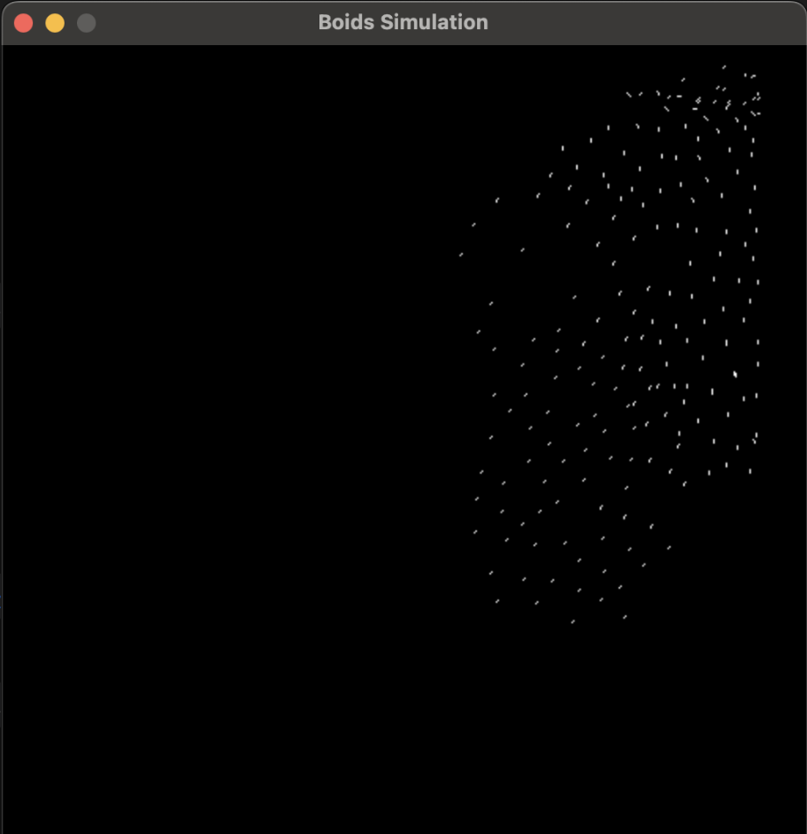

a few projects.
Here are a few projects I have done, that are a bit longer and more formally documented.
I haven't included things I am currently working on.
Below are links to the projects.
∆ Boids_FPGA
A very fast and efficient hardware (verilog + FPGA) implementation of the boids flocking algorithm.
⌘ Verilog_MIPS_CPU
A fully functioning 5 stage, pipelined, bypassed CPU made using Verilog from the ground up.
ꐠ Melanoma_Scan
An ios app that can detect skin cancer, and provide important environmental and location based information for melanoma.
☼ Solar_Panel_Dust_Sensor
A cost-effective arduino project to detect dust on solar panels.
ꐕ Prosthesis
An initiative to provide prosthetic limbs to those most in need.
∆ Boids_FPGA
github.com/Shaan106/Boids_FPGA
The goal of this project was to build an efficient low level implementation of the Boid Algorithm - an algorithm that simulates the flocking behavior of birds, or organisms in general.
The initial simulation was done in Python, where we showed the limitations we get when we try to simulate a large number of boids on a CPU-like architecture. We decided to create a hardware level implementation of this algorithm using Verilog and FPGAs to demonstrate that a much more efficient computational model is possible at the hardware level.
An in detail writeup can be found on the github readme, but the general outline of the project can be seen below:
- » High Level Simulations
- » Python Pygame Simulation (with no use of multiplication/division)
- » Simulation in C (with a few optimizations)
- » Compilation
- » Custom compilation from C to our custom MIPS instruction set
- » Custom MIPS simulator (test our compiled code, before time intensive FPGA testing)
- » Testing for our CPU with a verilog testbench
- » Custom Hardware Units (Verilog)
- » BPU (Boid Processing Unit, deals with a single boid's information)
- » Canvas RAM (Custom RAM implementation that allows for extremely VGA Screen updates)
- » VGA Screen Controller (Controls interactions with display)
- » I/O & regfile (custom implentation for better communication)
- » CPU
- » Custom built 5-stage pipelined MIPS CPU
- » Has its own seperate section here
- » Future Work/Bloopers
- » More details about the project and work can be found on the GitHub

⌘ Verilog_MIPS_CPU
github.com/Shaan106/ECE_350/Final_CPU
This CPU came out of the Digital Systems course at Duke University. It is a fully functioning 5 stage, pipelined, bypassed, error handling MIPS CPU. Its instruction set can be seen here on the right.
I have included a diagram (end of this section) I made while creating the CPU to show the scale of the datapath, not including the intricacies of each component (such as the wallace tree multiplier not being drawn out for obvious reasons). Some features are highlighted below:
- » 32-bit 100MHz processor
- » Pipelined and Bypassed
- » Handles hazards (no invalid computations returned)
- » Wallace Tree multiplier
- » Restoring Division Divider
- » CLA adder/subtractor
Everything from the logic gates to the DFFs to the entire datapath was created by myself. Source code can be found on the GitHub repository.


ꐠ Melanoma_Scan
github.com/Shaan106/MelanomaScan
Melanoma Scan is a an iOS app I developed to help diagnose skin cancer using just iPhone cameras.
Here's the app demo.
I developed this app using XCode, and built the image classfication model with inspiration from the
Inception v3 model. I have documented
everything about developing
the app (from the ideation to stakeholder interviews to sprints & ticketing to testing and evaluation), and you
can see it all below.
I learnt a lot through this project, such as full stack development, proper use of OOP, using APIs, creating and
optimising ML models,
using phone hardware (GPS and Cameras), data clearning & management, user-friendly and intuitive design, all
while maintaining that the stakeholders are satisfied.


This is all the documentation for when I made this app. It's over a hundred pages long and contains everything about making this app, from ideation to stakeholder identification to interviews to sprints and ticketing to the final product to testing
☼ Solar_Panel_Dust_Sensor
Solar panels are an emerging source of renewable energy,
but they often accumulate dust during use that decreases their efficiency significantly.
Our team designed a solar panel dirtiness sensor for Dr. Mike Bergin (Duke University Professor)
and Michael Valerino (Duke University PhD Student) to determine when solar panels require cleaning,
in order to maximize energy output.
Existing industrial solutions are expensive (over $8,000) and large (around a meter in length).
Additionally, previous teams have tackled this problem with a Raspberry Pi and a backup clock,
which proved cumbersome and time-consuming to set up. With our solution, we hope to tackle these existing problems
and create a low cost, easy to set up, functional sensor.
To mitigate the global problem of dust accumulation on solar panels, we created a small,
easy to setup sensor that captures magnified photos of dust on a glass slide at specified time intervals.

ꐕ Prosthesis
[to finish]